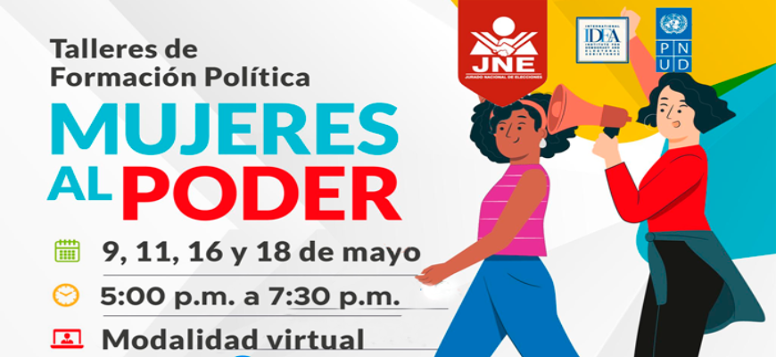

Noticias Relacionadas
“Todos para uno, uno para todos”
Esta es una genial novedad que está en proceso de aplicación piloto que será desarrollada inicialmente con IIEE focalizadas de Fe y Alegría y Colegios Emblemáticos.

Talleres Virtuales "Mujeres al Poder"
Dirigido a mujeres lideresas políticas y sociales aspirantes a cargos públicos en las ERM2022.


 Descargar
Descargar